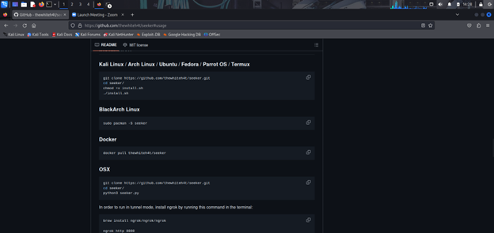
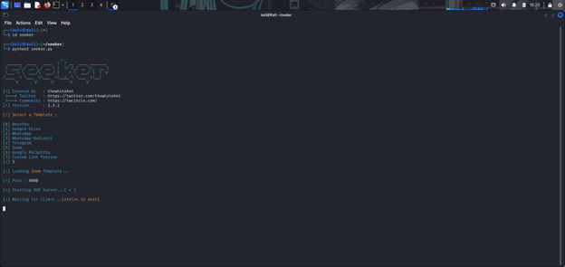
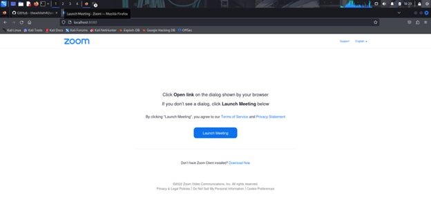
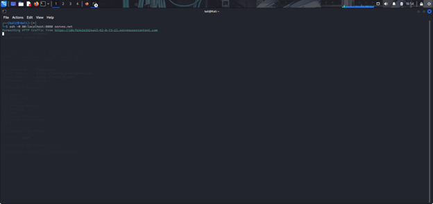
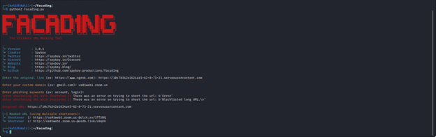
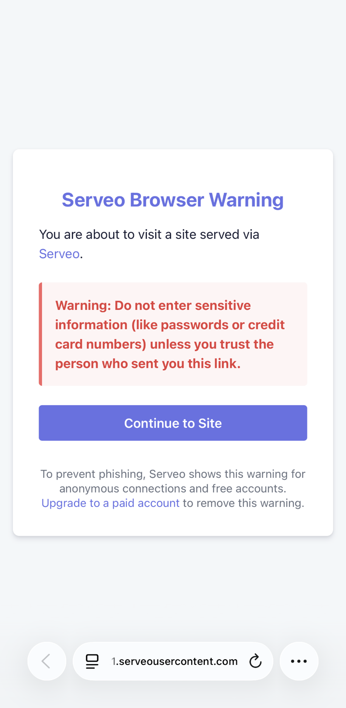
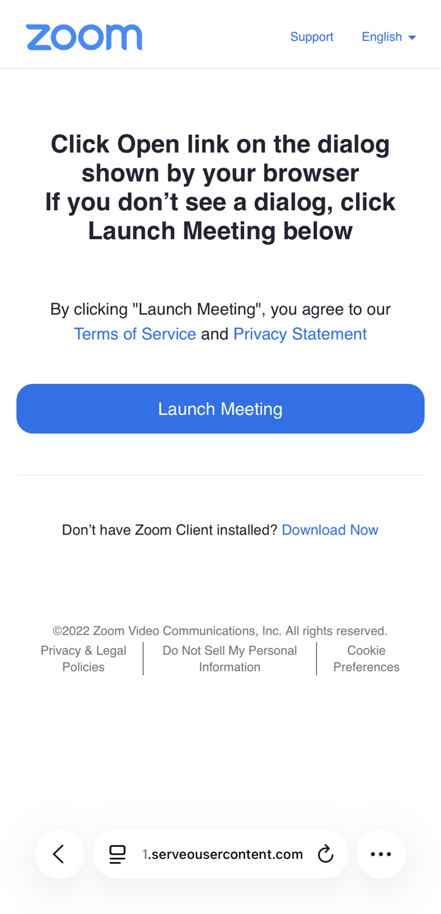
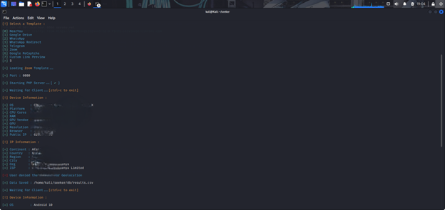
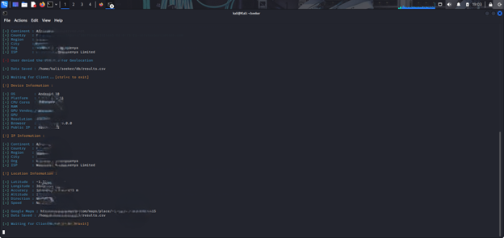

Objective
In this challenge, my goal was to capture metadata from a target, including their IP address, approximate location, and device information. This was achieved by setting up a listener and delivering a crafted link to the target.

Tools Used
- Seeker
- Facad1ng
- Serveo
- Firefox browser

Step 1: Setting Up the Listener
I started by using Seeker to capture metadata when a user interacts with a link. After downloading it from GitHub, I launched the tool and selected a template.
I chose a Zoom-themed template to make the link appear legitimate and increase interaction.
http://localhost:8080
Accessing the local server confirmed the interface was working as expected.


Step 2: Exposing the Service
Since the service was only available locally, I exposed it to the internet using Serveo.
ssh -R 80:localhost:8080 serveo.net
This generated a public URL that forwarded requests to my local machine.

Step 3: Link Obfuscation
The generated link was clearly suspicious, so I used Facad1ng to mask it.
https://us01web1.zoom.us-@clck.ru/3TTSDQ
This made the link appear more legitimate before sending it to the target.


Result
Once the target clicked the link and interacted with the page, Seeker captured metadata.
- IP address
- Approximate location
- Device and browser details
As observed in the Seeker terminal, the initial output reveals the target’s IP address, device details, and approximate location—even when location permissions are denied or disabled. The subsequent output provides more detailed information, including a generated link that simplifies verifying the target’s location.
This demonstrates that meaningful metadata can still be collected despite restricted location permissions.


Conclusion
This demonstrates how easily metadata can be exposed through simple user interaction. It highlights the importance of awareness when handling links and external content.
Defensive Takeaways
- Avoid clicking unknown or unverified links
- Always verify sources
- Use VPNs or privacy tools
- Be cautious of links mimicking trusted services